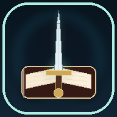

<!doctype html><html lang="es-CL"><head><meta charset="utf-8"><meta name="viewport" content="width=device-width,initial-scale=1,viewport-fit=cover"><meta name="theme-color" content="#08141e"><meta name="description" content="The Freedom Fight: un diario privado de 365 días para reflexionar con verdad, compasión y esperanza."><meta name="color-scheme" content="dark"><link rel="manifest" href="./manifest.webmanifest"><link rel="icon" href="./icon-192.png" type="image/png"><style>:root{color-scheme:dark;--bg:#08141e;--panel:#122735;--panel2:#182f3e;--line:#294655;--text:#f0f8f6;--muted:#a2b8bd;--mint:#80eac5;--mint2:#56c5ae;--gold:#f3d093;--rose:#f0ada5;--shadow:#0004;--radius:19px}
*{box-sizing:border-box}html{scroll-behavior:smooth}body{margin:0;background:radial-gradient(circle at 82% -10%,#204b4c 0,transparent 32%),var(--bg);font:15px/1.54 system-ui,-apple-system,'Segoe UI',sans-serif;color:var(--text)}button,input,select,textarea{font:inherit}button{cursor:pointer}button:focus-visible,input:focus-visible,select:focus-visible,textarea:focus-visible{outline:2px solid var(--mint);outline-offset:3px}a{color:var(--mint)}.hidden{display:none!important}.app{min-height:100vh;display:grid;grid-template-columns:249px minmax(0,1fr)}.sidebar{background:#0b1e2a;border-right:1px solid var(--line);position:sticky;top:0;height:100vh;padding:25px 16px;display:flex;flex-direction:column}.logo{display:flex;align-items:center;gap:12px;padding:8px 12px 26px}.logo-icon{width:47px;height:47px;display:grid;place-items:center;border-radius:15px;background:linear-gradient(145deg,#bff6de,#43baad);font-size:26px;color:#16343c}.logo b{font-size:17px;line-height:1.1;display:block}.logo small{color:var(--muted);font-size:11px;letter-spacing:.7px}.nav{display:flex;align-items:center;gap:11px;padding:12px 13px;width:100%;border:0;border-radius:12px;color:#c1d2d8;background:transparent;text-align:left;margin:3px 0;font-weight:650}.nav span{font-size:20px;width:24px;text-align:center}.nav:hover,.nav.active{background:#244139;color:#b8f7df}.side-note{margin-top:auto;padding:15px;background:#173039;border:1px solid var(--line);border-radius:14px;color:var(--muted);font-size:12px}.side-note b{display:block;color:var(--mint);font-size:13px;margin-bottom:5px}.main{max-width:1050px;width:100%;margin:0 auto;padding:31px clamp(18px,4vw,46px) 95px}.head{display:flex;align-items:center;justify-content:space-between;gap:12px;margin-bottom:28px}.overline{font-size:11px;letter-spacing:2px;text-transform:uppercase;font-weight:750;color:var(--mint)}h1{font-size:clamp(28px,4vw,40px);letter-spacing:-1.2px;line-height:1.14;margin:5px 0 10px}h2{margin:0;font-size:21px;letter-spacing:-.4px;line-height:1.25}h3{margin:0;font-size:16px}.lead{color:var(--muted);margin:0;max-width:660px}.card{border:1px solid var(--line);border-radius:var(--radius);background:linear-gradient(155deg,var(--panel),#10222f);padding:22px;box-shadow:0 8px 22px #00000015}.card + .card{margin-top:16px}.hero{border-color:#3a7568;background:radial-gradient(circle at 95% 0%,#3a80665b,transparent 43%),linear-gradient(120deg,#204b45,#132e3c 80%);padding:29px}.hero h2{font-size:clamp(25px,3.4vw,36px);line-height:1.13;margin:12px 0}.hero p{color:#d0e7e4;margin:0 0 19px;max-width:580px}.tag{display:inline-flex;border-radius:40px;background:#2b514b;border:1px solid #518475;color:#bafce2;padding:4px 11px;font-size:12px;font-weight:700}.btn{display:inline-flex;justify-content:center;align-items:center;gap:8px;border-radius:12px;border:1px solid #36535d;padding:11px 15px;color:var(--text);background:#203e4b;font-weight:750;min-height:43px;text-decoration:none}.btn:hover{filter:brightness(1.12)}.btn.primary{background:var(--mint);border-color:var(--mint);color:#0c302e}.btn.secondary{background:transparent}.btn.danger{border-color:#874b51;color:#ffd6d1;background:#452930}.btn.small{font-size:12px;padding:6px 10px;min-height:34px}.buttons{display:flex;flex-wrap:wrap;gap:9px}.gap{height:17px}.grid{display:grid;gap:16px}.grid.two{grid-template-columns:repeat(2,minmax(0,1fr))}.grid.three{grid-template-columns:repeat(3,minmax(0,1fr))}.stat small{color:var(--muted);font-weight:650}.stat strong{display:block;font-size:29px;letter-spacing:-.8px;margin:6px 0}.stat p{margin:0;color:var(--muted);font-size:12px}.muted{color:var(--muted)}.tint{color:var(--mint)}.warm{color:var(--gold)}.small{font-size:12px}.section-title{margin:25px 0 13px}.meter{height:9px;background:#304958;border-radius:15px;overflow:hidden}.meter span{display:block;height:100%;background:linear-gradient(90deg,#50c5ad,#b5efd1);border-radius:15px}.day-strip{display:grid;grid-template-columns:repeat(14,minmax(0,1fr));gap:5px}.day-dot{text-align:center;min-width:0}.day-dot .square{height:30px;border:1px solid #345362;border-radius:7px;background:#193543;cursor:pointer}.day-dot .square.clear{background:#58be9e;border-color:#58be9e}.day-dot .square.fall{background:#b47d72;border-color:#b47d72}.day-dot .square.today{box-shadow:0 0 0 2px var(--gold)}.day-dot small{font-size:10px;color:var(--muted)}.item{padding:13px 0;border-bottom:1px solid var(--line);display:flex;gap:12px;align-items:center;justify-content:space-between}.item:last-child{border-bottom:0;padding-bottom:0}.badge{border:1px solid #386257;background:#244d43;color:#d1f5e6;border-radius:20px;padding:4px 9px;font-size:11px;white-space:nowrap}.badge.fall{border-color:#966760;background:#492f35;color:#ffd5ce}.form-row{display:grid;grid-template-columns:repeat(2,minmax(0,1fr));gap:14px}.field{display:flex;flex-direction:column;gap:7px;margin-bottom:15px}.field label{font-size:13px;font-weight:720;color:#d4e7e8}.field .hint{font-size:11px;color:var(--muted)}.control{width:100%;min-height:44px;padding:10px 13px;border:1px solid #395963;border-radius:12px;background:#0d222e;color:var(--text);color-scheme:dark}.control::placeholder{color:#75919a}textarea.control{resize:vertical;min-height:83px}.options{display:grid;grid-template-columns:repeat(2,minmax(0,1fr));gap:9px}.option{border:1px solid #3b5d67;background:#15323e;border-radius:13px;padding:13px;display:flex;align-items:center;gap:10px;cursor:pointer;font-size:13px;font-weight:650}.option input{accent-color:#6edcc0}.chips{display:flex;flex-wrap:wrap;gap:8px}.chip{display:inline-flex;align-items:center;gap:7px;background:#1a3945;border:1px solid #3d5b65;border-radius:40px;padding:7px 11px;font-size:12px}.chip input{accent-color:var(--mint)}.callout{padding:15px;border-left:3px solid var(--mint);border-radius:11px;background:#1b383c;color:#d0e5df;font-size:13px}.callout.gold{border-color:var(--gold);background:#333329}.months{display:flex;align-items:center;gap:12px;justify-content:space-between;margin-bottom:12px}.calendar{display:grid;grid-template-columns:repeat(7,minmax(0,1fr));gap:7px}.cal-head{text-align:center;font-size:11px;color:var(--muted)}.cal-empty{height:57px}.cal-day{border-radius:12px;border:1px solid #355361;background:#1a3340;color:var(--text);height:63px;padding:6px 3px;display:grid;align-content:center;justify-items:center;gap:1px;font-weight:700}.cal-day .mark{width:7px;height:7px;border-radius:50%;background:transparent}.cal-day.clear{background:#215546;border-color:#3b8e77}.cal-day.clear .mark{background:#a4f0ce}.cal-day.fall{background:#473138;border-color:#91645d}.cal-day.fall .mark{background:#ffb8a8}.cal-day.today{box-shadow:inset 0 0 0 2px var(--gold)}.cal-day.out{opacity:.35}.cal-day span{font-size:15px}.cal-day small{font-size:9px}.legend{display:flex;flex-wrap:wrap;gap:14px;font-size:12px;margin:15px 0;color:var(--muted)}.legend i{width:11px;height:11px;border-radius:3px;background:#1a3340;display:inline-block;margin-right:5px;border:1px solid #355361}.legend i.good{background:#215546}.legend i.hard{background:#473138}.reflection-list{display:grid;gap:9px}.reflection-row{width:100%;text-align:left;padding:14px;border-radius:13px;border:1px solid #385761;background:#183440;color:var(--text);display:flex;align-items:center;justify-content:space-between;gap:10px}.reflection-row span{color:var(--muted);font-size:12px}.steps{list-style:none;padding:0;margin:12px 0 0}.steps li{display:flex;gap:13px;margin:13px 0;align-items:flex-start}.number{border-radius:13px;background:#315b51;color:#c6ffea;font-weight:800;min-width:34px;height:34px;display:grid;place-items:center}.footer{margin-top:30px;padding-top:20px;border-top:1px solid var(--line);font-size:11px;color:#809ca5}.notice{padding:12px 15px;border-radius:11px;background:#26483e;border:1px solid #4b8b72;color:#dcffe8;font-size:12px;position:fixed;bottom:28px;left:50%;transform:translateX(-50%);z-index:80;max-width:90vw;box-shadow:0 7px 20px #0007}.notice.error{background:#59363c;border-color:#b16e6d}.gate{min-height:100dvh;display:grid;place-items:center;padding:23px}.gate-card{width:min(440px,100%);padding:32px;border-radius:24px;border:1px solid #3c6b65;background:radial-gradient(circle at 95% 0%,#2d7f6459,transparent 50%),#112936;box-shadow:0 30px 80px #0007}.gate-ico{font-size:35px;background:linear-gradient(135deg,#e4f8e2,#56c7b3);color:#123b34;width:66px;height:66px;display:grid;place-items:center;border-radius:20px}.gate-card h1{margin:15px 0 10px}.gate-card p{color:#bed1d2;font-size:13px}.security-p{padding:13px;border:1px solid #3d5c61;border-radius:12px;background:#16313d;font-size:12px;color:#b9d1d2}.mobile-nav{display:none}.flexbetween{display:flex;justify-content:space-between;align-items:center;gap:12px;flex-wrap:wrap}.verse{font-style:italic;color:#d8ead8}.link-btn{border:0;background:transparent;color:var(--mint);font-weight:750;padding:5px;cursor:pointer}.right{text-align:right}.savehint{font-size:12px;color:#adc4bf}.danger-zone{border-color:#754c55}.textcontent{overflow-wrap:anywhere;white-space:pre-wrap}.no-marg{margin:0}hr{border:0;border-top:1px solid var(--line);margin:20px 0}dialog{background:#142d38;border:1px solid #4a6a70;color:var(--text);border-radius:18px;max-width:94vw;width:min(480px,94vw);padding:22px;box-shadow:0 20px 80px #0008}dialog::backdrop{background:#000b}
@media(max-width:800px){.app{display:block}.sidebar{display:none}.main{padding:25px 17px 110px}.mobile-nav{display:flex;position:fixed;bottom:0;left:0;right:0;padding:9px 7px calc(9px + env(safe-area-inset-bottom));background:#0a202beF;border-top:1px solid #36515a;z-index:50;justify-content:space-between;backdrop-filter:blur(14px)}.mobile-nav button{flex:1;border:0;border-radius:12px;padding:7px 3px;background:transparent;color:#afc8ce;display:grid;justify-items:center;gap:1px;font-size:10px}.mobile-nav button span{font-size:20px}.mobile-nav button.active{background:#2a5045;color:#c2ffe8}.notice{bottom:88px}.head{align-items:flex-start}.head .buttons .btn{padding:9px}}
@media(max-width:500px){.grid.three{grid-template-columns:repeat(2,minmax(0,1fr))}.grid.two,.form-row{grid-template-columns:1fr}.card{padding:17px}.hero{padding:22px}.options{grid-template-columns:1fr}.day-strip{gap:3px}.day-dot .square{height:24px}.day-dot small{font-size:8px}.calendar{gap:4px}.cal-day{height:57px;border-radius:9px}.cal-day span{font-size:14px}}
@media(prefers-reduced-motion:reduce){*,*:before,*:after{scroll-behavior:auto!important;animation:none!important;transition:none!important}}

.logo-icon img,.gate-ico img{width:100%;height:100%;object-fit:cover;border-radius:inherit;display:block}.gate-ico{padding:0;overflow:hidden;font-size:0}.logo-icon{padding:0;overflow:hidden;font-size:0}.logo-icon img{border-radius:12px}.gate-ico img{border-radius:20px}
</style><meta http-equiv="Content-Security-Policy" content="default-src 'none'; script-src 'sha256-e+ivGZA+1jY24SJe+0xF0TuXccVxapHc2ohI71AQB8k='; style-src 'sha256-WfsDdNjIzBgVWdUcAN/DI6iJDX1vgbx+VDX3CbtliwE='; img-src 'self' data:; connect-src 'none'; manifest-src 'self'; form-action 'none'; object-src 'none'; base-uri 'none'"><title>The Freedom Fight · Un día a la vez</title></head><body><section id="vault" class="gate"></section><section id="application" class="hidden"></section><dialog id="modal"></dialog><div id="notice" hidden></div><script>/* The Freedom Fight — sin servicios externos, sin publicidad, sin cuentas. */
(()=>{'use strict';
const STORAGE='diario-libertad-v1-vault';const ITER=250000;const enc=new TextEncoder(),dec=new TextDecoder();
const e=s=>String(s??'').replace(/[&<>"']/g,c=>({'&':'&amp;','<':'&lt;','>':'&gt;','"':'&quot;',"'":'&#39;'}[c]));
const $=id=>document.getElementById(id);const iso=d=>`${d.getFullYear()}-${String(d.getMonth()+1).padStart(2,'0')}-${String(d.getDate()).padStart(2,'0')}`;const today=()=>iso(new Date());
const mkDate=s=>new Date(`${s}T12:00:00`);const shift=(s,n)=>{const d=mkDate(s);d.setDate(d.getDate()+n);return iso(d)};
const difference=(a,b)=>Math.round((Date.parse(a+'T12:00:00Z')-Date.parse(b+'T12:00:00Z'))/86400000);
const fmt=s=>mkDate(s).toLocaleDateString('es-CL',{day:'numeric',month:'long',year:'numeric'});
const monthTitle=(y,m)=>new Date(y,m,1).toLocaleDateString('es-CL',{month:'long',year:'numeric'});
const b64=arr=>btoa(String.fromCharCode(...arr));const from64=s=>Uint8Array.from(atob(s),c=>c.charCodeAt(0));
let db=null,key=null,record=null,screen='inicio',selected=today(),visibleMonth=today().slice(0,7),review=30,secretKey=null,saveTimer=null,lastInteraction=Date.now(),dirty=false;
const defaultDb=()=>({version:1,startDate:'2026-11-02',entries:{},reflections:{},plan:{contacts:'',actions:'Salir del lugar donde estoy, dejar el celular lejos y buscar compañía.',why:'Quiero vivir con integridad, cuidar mi fe y recuperar la paz.',words:'Una decisión difícil no borra todo mi camino.'},createdAt:new Date().toISOString()});
const lastDay=()=>shift(db.startDate,364),inRange=d=>d>=db.startDate&&d<=lastDay(),dayNo=d=>difference(d,db.startDate)+1;
const rawRec=()=>localStorage.getItem(STORAGE);const notify=(msg,bad=false)=>{const el=$('notice');el.textContent=msg;el.className='notice'+(bad?' error':'');el.hidden=false;clearTimeout(notify.t);notify.t=setTimeout(()=>{el.hidden=true},3500)};
const derive=async(pass,salt)=>{const base=await crypto.subtle.importKey('raw',enc.encode(pass),'PBKDF2',false,['deriveKey']);return crypto.subtle.deriveKey({name:'PBKDF2',salt,iterations:ITER,hash:'SHA-256'},base,{name:'AES-GCM',length:256},false,['encrypt','decrypt'])};
async function encrypt(value,k,salt){const iv=crypto.getRandomValues(new Uint8Array(12));const payload=await crypto.subtle.encrypt({name:'AES-GCM',iv},k,enc.encode(JSON.stringify(value)));return {format:'diario-libertad-cifrado',version:1,iterations:ITER,salt:b64(salt),iv:b64(iv),ciphertext:b64(new Uint8Array(payload)),updatedAt:new Date().toISOString()}}
async function decrypt(rec,pass){if(rec?.format!=='diario-libertad-cifrado'||rec?.version!==1||rec?.iterations!==ITER)throw Error('Formato de respaldo no compatible');const salt=from64(rec.salt);const k=await derive(pass,salt);const content=await crypto.subtle.decrypt({name:'AES-GCM',iv:from64(rec.iv)},k,from64(rec.ciphertext));const d=JSON.parse(dec.decode(content));if(!validDb(d))throw Error('Datos inválidos');return {data:d,key:k}}
const validDb=d=>d&&d.version===1&&/^\d{4}-\d\d-\d\d$/.test(d.startDate)&&typeof d.entries==='object'&&d.entries&&!Array.isArray(d.entries)&&typeof d.reflections==='object'&&d.reflections&&!Array.isArray(d.reflections)&&d.plan&&typeof d.plan==='object';
let writing=Promise.resolve();function persist(){if(!db||!key||!record)return Promise.resolve();const snapshot=structuredClone(db);const k=key;const salt=from64(record.salt);writing=writing.then(async()=>{const r=await encrypt(snapshot,k,salt);localStorage.setItem(STORAGE,JSON.stringify(r));record=r;dirty=false}).catch(err=>{console.error(err);notify('No se pudo guardar. Revisa el almacenamiento de Chrome.',true)});return writing}
async function beginSetup(pass){if(pass.length<10)throw Error('Usa al menos 10 caracteres.');db=defaultDb();selected=inRange(today())?today():db.startDate;const salt=crypto.getRandomValues(new Uint8Array(16));key=await derive(pass,salt);record={salt:b64(salt)};await persist();showApp()}
async function unlock(pass){const parsed=JSON.parse(rawRec());const out=await decrypt(parsed,pass);db=out.data;key=out.key;record=parsed;selected=inRange(today())?today():db.startDate;visibleMonth=selected.slice(0,7);lastInteraction=Date.now();showApp()}
function lock(){if(!db)return; if(dirty)persist();db=null;key=null;record=null;clearTimeout(saveTimer);$('application').classList.add('hidden');$('vault').classList.remove('hidden');gate();}
function gate(){const exists=!!rawRec();$('vault').innerHTML=`<div class="gate-card"><div class="gate-ico"></div><div class="overline" style="margin-top:19px">THE FREEDOM FIGHT</div><h1>${exists?'Tu diario te espera':'Un espacio para volver a empezar'}</h1><p>${exists?'Tus palabras están cifradas en este dispositivo. Ingresa tu contraseña para continuar.':'Tu historia merece cuidado, privacidad y paciencia. Crea una contraseña para proteger tus reflexiones.'}</p><form id="gate-form"><div class="field"><label for="password">${exists?'Tu contraseña':'Crea una contraseña (mínimo 10 caracteres)'}</label><input id="password" type="password" class="control" autocomplete="off" minlength="${exists?1:10}" required></div>${!exists?'<div class="field"><label for="confirm-pass">Repite tu contraseña</label><input id="confirm-pass" type="password" class="control" minlength="10" autocomplete="off" required></div>':''}<button class="btn primary" id="gate-submit" type="submit" style="width:100%">${exists?'Abrir mi diario':'Crear mi diario privado'}</button></form><div class="gap"></div><div class="security-p">🔒 Cifrado AES-256-GCM. No hay cuentas, publicidad ni sincronización. Si pierdes tu contraseña y no tienes un respaldo accesible, no podremos recuperar los datos.</div>${exists?'<div class="gap"></div><button class="link-btn" data-action="import-gate">Restaurar desde respaldo cifrado</button>':''}<p class="muted small">No reemplaza el apoyo de una persona de confianza o de un profesional de salud mental.</p></div>`;$('gate-form').addEventListener('submit',async ev=>{ev.preventDefault();const p=$('password').value;const btn=$('gate-submit');if(!exists&&p!==$('confirm-pass').value){notify('Las contraseñas no coinciden.',true);return}btn.disabled=true;btn.textContent='Protegiendo tus notas…';try{if(exists)await unlock(p);else await beginSetup(p)}catch(ex){notify(exists?'Contraseña incorrecta o datos dañados.':'No se pudo crear el diario. '+ex.message,true);btn.disabled=false;btn.textContent=exists?'Abrir mi diario':'Crear mi diario privado'}})}
const navs=[['inicio','⌂','Inicio'],['escribir','✎','Mi día'],['calendario','▦','Calendario'],['reflexiones','✧','Reflexiones'],['plan','♡','Mi plan'],['ajustes','⚙','Ajustes']];
function layout(){document.title='The Freedom Fight · Un día a la vez';$('application').innerHTML=`<div class="app"><aside class="sidebar"><div class="logo"><div class="logo-icon"></div><div><b>The Freedom Fight</b><small>UN DÍA A LA VEZ</small></div></div><div id="side-nav"></div><div class="side-note"><b>Un lugar seguro para regresar.</b>La perseverancia no exige perfección. Escribir con verdad también es avanzar.</div></aside><main id="main" class="main" tabindex="-1"></main><nav class="mobile-nav" id="mobile-nav" aria-label="Navegación"></nav></div>`;}
function navRender(){const html=navs.map(([id,s,t])=>`<button data-nav="${id}" class="${screen===id?'active':''} ${screen==='ajustes'&&id==='ajustes'?'active':''}" ${id==='ajustes'?'aria-label="Ajustes"':''}><span>${s}</span>${t}</button>`).join('');$('side-nav').innerHTML=html;$('mobile-nav').innerHTML=navs.filter(x=>x[0]!=='ajustes').slice(0,5).map(([id,s,t])=>`<button data-nav="${id}" class="${screen===id?'active':''}"><span>${s}</span>${t}</button>`).join('');}
function title(t,sub,right=''){return `<div class="head"><div><div class="overline">The Freedom Fight</div><h1>${t}</h1><p class="lead">${sub}</p></div>${right}</div>`}
function page(){if(!db)return;navRender();const node=$('main');node.innerHTML=({inicio:home,escribir:journal,calendario:calendar,reflexiones:reflections,plan:plan,ajustes:settings}[screen]||home)();}
function navigate(s){if(dirty)saveDraft();screen=s;page();window.scrollTo({top:0,behavior:'instant'})}
function showApp(){screen='inicio';$('vault').classList.add('hidden');$('application').classList.remove('hidden');layout();page()}
function statusInfo(s){return s==='clear'?{class:'',label:'Hoy no consumí pornografía'}:s==='fall'?{class:'fall',label:'Tuve una caída y sigo adelante'}:{class:'',label:'Sin marcar'}}
function home(){const n=Object.keys(db.entries).filter(inRange).length;const clear=Object.values(db.entries).filter(x=>x.status==='clear').length,falls=Object.values(db.entries).filter(x=>x.status==='fall').length;const now=inRange(today())?today():db.startDate,idx=dayNo(now);const recent=Object.entries(db.entries).filter(([d])=>inRange(d)).sort((a,b)=>b[0].localeCompare(a[0])).slice(0,4);
let dots='';for(let i=13;i>=0;i--){const d=shift(now,-i);const s=db.entries[d]?.status;dots+=`<div class="day-dot"><button class="square ${s==='clear'?'clear':s==='fall'?'fall':''} ${d===today()?'today':''}" data-date="${d}" aria-label="${fmt(d)}: ${statusInfo(s).label}" title="${e(fmt(d))}"></button><small>${mkDate(d).toLocaleDateString('es-CL',{day:'numeric'})}</small></div>`}
return title('Hoy es un nuevo día','No tienes que demostrar nada aquí. Puedes escribir con sinceridad y cuidar de ti.',`<button class="btn secondary" data-action="lock">🔒 Bloquear</button>`)+`<section class="card hero"><span class="tag">📖 Día ${Math.max(1,Math.min(365,idx))} de 365</span><h2>La esperanza también empieza<br>con pasos pequeños.</h2><p>Este diario no mide tu valor. Guarda tu historia con verdad, compasión y el deseo de seguir caminando.</p><div class="buttons"><button class="btn primary" data-nav="escribir">✎ Escribir mi día</button><button class="btn secondary" data-nav="plan">♡ Necesito una pausa</button></div></section><div class="gap"></div><div class="grid three"><div class="card stat"><small>Días con anotaciones</small><strong>${n} <span class="muted" style="font-size:14px">/ 365</span></strong><p>La constancia de escribir cuenta</p></div><div class="card stat"><small>Días que te cuidaste</small><strong class="tint">${clear}</strong><p>Registrados por ti</p></div><div class="card stat"><small>Días difíciles</small><strong class="warm">${falls}</strong><p>Oportunidades de comprenderte</p></div></div><h2 class="section-title">Las últimas dos semanas</h2><div class="card"><div class="day-strip">${dots}</div><p class="small muted" style="margin-bottom:0">Las casillas sin marcar no significan una caída. Puedes completar días anteriores cuando lo necesites.</p></div><h2 class="section-title">Tus notas recientes</h2><div class="card">${recent.length?recent.map(([d,x])=>`<div class="item"><div><strong>${e(fmt(d))}</strong><p class="muted small no-marg">${e(x.learning||x.feeling||'Entrada guardada').slice(0,110)}</p></div><button class="btn small" data-date="${d}">Abrir</button></div>`).join(''):'<p class="muted">Aquí aparecerán tus reflexiones. Puedes comenzar hoy, incluso si ha sido un día difícil.</p>'}</div><div class="gap"></div><div class="callout"><span class="verse">«Cercano está Jehová a los quebrantados de corazón».</span> — Salmo 34:18. Tu fe puede ser fuente de consuelo, no otra forma de castigarte.</div>`}
const triggers=['Estrés','Soledad','Cansancio','Ansiedad','Aburrimiento','Tristeza','Redes sociales','Noche / madrugada','Conflictos','Otro'];
function journal(){if(!inRange(selected))selected=inRange(today())?today():db.startDate;const x=db.entries[selected]||{},s=x.status||'none';return title('Mi página de hoy','Escribe lo que viviste, cómo respondiste y qué puedes aprender. No hay calificaciones.')+`<form id="day-form"><div class="card"><div class="flexbetween"><div><div class="overline">Día ${dayNo(selected)} / 365</div><h2>${e(fmt(selected))}</h2></div><div class="field" style="margin:0"><label for="entry-date">Elegir fecha</label><input class="control" id="entry-date" type="date" value="${selected}" min="${db.startDate}" max="${lastDay()}"></div></div><hr><h3>¿Cómo fue este día?</h3><p class="muted small">Puedes dejarlo sin marcar hasta que quieras responder.</p><div class="options"><label class="option"><input type="radio" name="status" value="clear" ${s==='clear'?'checked':''}> Hoy no consumí pornografía</label><label class="option"><input type="radio" name="status" value="fall" ${s==='fall'?'checked':''}> Tuve una caída y sigo adelante</label><label class="option"><input type="radio" name="status" value="none" ${s==='none'?'checked':''}> Prefiero no marcarlo ahora</label></div><div class="gap"></div><div class="field"><label for="mood">¿Cómo te sientes hoy?</label><select class="control" id="mood" name="mood"><option value="">Prefiero no elegir</option>${[['1','Muy sobrepasado'],['2','Triste o inquieto'],['3','Mezcla de emociones'],['4','Con esperanza'],['5','En paz']].map(([n,t])=>`<option value="${n}" ${x.mood===n?'selected':''}>${t}</option>`).join('')}</select></div><div class="field"><label>¿Qué hizo difícil el día? (opcional)</label><div class="chips">${triggers.map(t=>`<label class="chip"><input type="checkbox" name="triggers" value="${e(t)}" ${x.triggers?.includes(t)?'checked':''}>${e(t)}</label>`).join('')}</div></div></div><div class="gap"></div><div class="card"><h2>Tres preguntas para volver a mirarte</h2><p class="muted small">Como en tu diario original de 365 días.</p>${fieldArea('feeling','¿Cómo me sentí?',x.feeling,'Ponle nombre a lo que has vivido, sin juzgarte.')}${fieldArea('fought','¿Cómo luché?',x.fought,'¿Qué hiciste para cuidarte? ¿Qué fue difícil?')}${fieldArea('learning','¿Qué aprendí?',x.learning,'Una observación amable y concreta que puedas aprovechar.')}</div><div class="gap"></div><div class="card"><h2>Mirando hacia mañana</h2><div class="gap"></div>${fieldArea('need','¿Qué necesito en este momento?',x.need,'Descanso, apoyo, claridad, compañía…')}${fieldArea('nextStep','Una acción pequeña para mañana',x.nextStep,'Ej.: dejar el celular fuera de la habitación por la noche.')}${fieldArea('prayer','Mi oración o reflexión personal (opcional)',x.prayer,'Escribe libremente; este espacio también es tuyo.')}<div class="flexbetween"><span id="saved-flag" class="savehint">Tu texto se guarda cifrado automáticamente en este dispositivo.</span><button class="btn primary" type="submit">Guardar mi día</button></div></div></form><div class="gap"></div><div class="callout gold">Si hoy hubo una caída, evita convertirla en un juicio sobre tu persona. Observa qué ocurrió y busca un siguiente paso. Pedir ayuda también cuenta.</div>`}
function fieldArea(name,label,val,placeholder){return `<div class="field"><label for="${name}">${label}</label><textarea class="control" id="${name}" name="${name}" rows="3" maxlength="6000" placeholder="${e(placeholder)}">${e(val||'')}</textarea></div>`}
function saveDraft(){if(screen!=='escribir'||!db||!$('day-form'))return;const f=$('day-form');const q=new FormData(f);const o={status:q.get('status')||'none',mood:q.get('mood')||'',triggers:q.getAll('triggers'),feeling:q.get('feeling')||'',fought:q.get('fought')||'',learning:q.get('learning')||'',need:q.get('need')||'',nextStep:q.get('nextStep')||'',prayer:q.get('prayer')||'',savedAt:new Date().toISOString()};const any=o.status!=='none'||o.mood||o.triggers.length||[o.feeling,o.fought,o.learning,o.need,o.nextStep,o.prayer].some(x=>x.trim());if(any)db.entries[selected]=o;else delete db.entries[selected];dirty=true;persist();const flag=$('saved-flag');if(flag)flag.textContent='✓ Cambios guardados de forma cifrada.'}
function calendar(){const [y,m]=visibleMonth.split('-').map(Number);const offset=(new Date(y,m-1,1).getDay()+6)%7;const count=new Date(y,m,0).getDate();let days='';for(let i=0;i<offset;i++)days+='<div class="cal-empty"></div>';for(let n=1;n<=count;n++){const d=`${y}-${String(m).padStart(2,'0')}-${String(n).padStart(2,'0')}`;const s=db.entries[d]?.status;days+=`<button class="cal-day ${s==='clear'?'clear':s==='fall'?'fall':''} ${d===today()?'today':''} ${!inRange(d)?'out':''}" data-date="${d}" ${!inRange(d)?'disabled':''} aria-label="${e(fmt(d))} ${statusInfo(s).label}"><span>${n}</span><i class="mark"></i></button>`}return title('Mi calendario','Una mirada a tus días, sin castigos ni comparaciones.')+`<div class="card"><div class="months"><button class="btn small secondary" data-action="month-prev" aria-label="Mes anterior">‹ Anterior</button><h2>${e(monthTitle(y,m-1))}</h2><button class="btn small secondary" data-action="month-next" aria-label="Mes siguiente">Siguiente ›</button></div><div class="calendar">${['Lu','Ma','Mi','Ju','Vi','Sa','Do'].map(x=>`<div class="cal-head">${x}</div>`).join('')}${days}</div><div class="legend"><span><i class="good"></i> Día de cuidado</span><span><i class="hard"></i> Día difícil</span><span><i></i> Sin marcar</span></div><p class="small muted">Toca una fecha para leer o completar tus notas. El calendario sigue las 365 fechas de tu diario.</p></div>`}
function reflections(){const last=Math.min(365,dayNo(today()));const options=[];for(let n=30;n<=360;n+=30)options.push(n);options.push(365);const current=db.reflections[String(review)]||{};
return title('Pausas para reflexionar','Cada 30 días puedes mirar lo vivido con verdad y compasión.')+`<div class="grid two"><div class="card"><h2>Mis pausas de reflexión</h2><div class="gap"></div><div class="reflection-list">${options.map((n,i)=>`<button class="reflection-row" data-review="${n}"><div><strong>${n===365?'Cierre del año · día 365':`Pausa ${String(i+1).padStart(2,'0')} · días ${n-29}–${n}`}</strong><div><span>${db.reflections[String(n)]?'✓ Reflexión guardada':n>last?'Puedes prepararla cuando quieras':'Disponible para escribir'}</span></div></div><span>${n===review?'●':'›'}</span></button>`).join('')}</div></div><div class="card"><div class="overline">${review===365?'Reflexión final':'Pausa de reflexión'}</div><h2>${review===365?'Al terminar este año':`Días ${review-29} a ${review}`}</h2><div class="gap"></div><form id="review-form">${fieldArea('helped',review===365?'¿Qué cambió en mi manera de comprenderme?':'Lo que más me ayudó',current.helped,'¿Qué decisiones, personas o prácticas te sostuvieron?')}${fieldArea('hard',review===365?'¿Qué aprendí de mis días difíciles?':'Lo que me costó',current.hard,'¿Qué emociones y momentos me hicieron vulnerable?')}${fieldArea('step',review===365?'¿Qué quiero llevar conmigo al próximo año?':'Un paso concreto para los próximos 30 días',current.step,'Una decisión pequeña y realizable.')}${fieldArea('grace','Algo por lo que doy gracias (opcional)',current.grace,'Puedes escribir una oración o un agradecimiento.')}<button type="submit" class="btn primary">Guardar reflexión</button></form></div></div>`}
function plan(){return title('Mi plan para momentos difíciles','No necesitas resolver toda tu vida durante un impulso. Puedes cuidarte durante los próximos minutos.')+`<div class="card hero"><span class="tag">♡ Pausa de cuidado · 10 minutos</span><h2>Una decisión a la vez.</h2><p>Que aparezca una tentación no significa que debas actuar. Puedes responder con una acción concreta y pedir compañía.</p><div class="buttons"><button class="btn primary" data-action="start-pause">Comenzar pausa de 10 minutos</button><button class="btn secondary" data-nav="escribir">Escribir lo que siento</button></div><div id="pause-area"></div></div><div class="gap"></div><div class="grid two"><div class="card"><h2>Pasos cuando necesito parar</h2><ul class="steps"><li><span class="number">1</span><div><strong>Aléjate del estímulo.</strong><div class="muted small">Deja el teléfono a un lado; cambia de habitación o sal a caminar.</div></div></li><li><span class="number">2</span><div><strong>Respira y observa.</strong><div class="muted small">Nota lo que sientes, sin discutir con tus emociones ni avergonzarte.</div></div></li><li><span class="number">3</span><div><strong>Busca conexión.</strong><div class="muted small">Habla con alguien de confianza si puedes. No tienes que contar todo.</div></div></li><li><span class="number">4</span><div><strong>Elige una acción breve.</strong><div class="muted small">Toma agua, descansa, lee, ora o haz una tarea sencilla.</div></div></li></ul></div><div class="card"><h2>Mi recordatorio personal</h2><p class="verse">«Bástate mi gracia; porque mi poder se perfecciona en la debilidad». — 2 Corintios 12:9.</p><div class="callout">${e(db.plan.words||'Un día difícil no define quién soy.')}</div><div class="gap"></div><p class="muted small">No necesitas enfrentar esto únicamente con fuerza de voluntad. Un acompañante espiritual de confianza y un terapeuta pueden ayudarte a reconocer patrones y desarrollar herramientas.</p></div></div><h2 class="section-title">Mi red de cuidado</h2><div class="card"><form id="plan-form">${fieldArea('why','Por qué quiero avanzar',db.plan.why,'Una razón profunda, desde tus valores.')}${fieldArea('actions','Acciones que me ayudan a estar a salvo de una recaída',db.plan.actions,'Ej.: apartar el celular, salir a caminar, descansar…')}${fieldArea('contacts','Personas con quienes puedo hablar (solo nombres o apodos)',db.plan.contacts,'Un hermano de la iglesia, un amigo, mi pastor, un profesional…')}${fieldArea('words','Palabras que quiero recordarme',db.plan.words,'Sé paciente contigo. Pide ayuda cuando lo necesites.') }<button class="btn primary" type="submit">Guardar mi plan</button></form></div>`}
function settings(){return title('Ajustes y privacidad','Este diario vive en tu navegador. Tú controlas tus notas y tus respaldos.')+`<div class="card"><h2>Seguridad</h2><p class="muted small">Tus entradas están cifradas con contraseña. Los datos no se envían a ningún servidor. El código de la app puede alojarse en un sitio público, pero tus anotaciones permanecen en tu dispositivo.</p><div class="buttons"><button class="btn primary" data-action="backup">↓ Descargar respaldo cifrado</button><button class="btn" data-action="restore">↑ Recuperar respaldo</button><button class="btn secondary" data-action="change-pass">Cambiar contraseña</button><button class="btn secondary" data-action="lock">🔒 Bloquear</button></div><p class="muted small">Guarda el respaldo en un lugar seguro y conserva tu contraseña. Si borras los datos del navegador o cambias de teléfono, necesitarás el respaldo para recuperar tus notas.</p></div><div class="gap"></div><div class="card"><h2>Mi recorrido</h2><p class="muted small">Basado en el diario original de 365 días. Puedes ajustar la fecha inicial solamente antes de escribir anotaciones.</p><div class="field"><label>Fecha de inicio</label><input class="control" id="start-date" type="date" value="${db.startDate}" ${Object.keys(db.entries).length||Object.keys(db.reflections).length?'disabled':''}></div><button class="btn secondary" data-action="start-change" ${Object.keys(db.entries).length||Object.keys(db.reflections).length?'disabled':''}>Cambiar fecha inicial</button><p class="small muted">Actualmente: ${e(fmt(db.startDate))} hasta ${e(fmt(lastDay()))}.</p></div><div class="gap"></div><div class="card"><h2>¿Qué hace esta aplicación?</h2><p class="muted small">Registra reflexiones y preferencias, muestra calendario y pausas de 30 días. No bloquea contenido, no vigila tu navegación, no diagnostica ni sustituye tratamiento. Tampoco tiene sincronización entre dispositivos.</p><p class="small muted">Los datos se conservan solamente en el almacenamiento de este navegador, protegidos con AES-GCM y una clave derivada de tu contraseña mediante PBKDF2. No se ha realizado una auditoría externa de seguridad.</p></div><div class="gap"></div><div class="card danger-zone"><h2>Eliminar este diario</h2><p class="muted small">Esta acción elimina de este navegador las entradas y la contraseña asociada. No podrás recuperarlas sin un respaldo válido.</p><button class="btn danger" data-action="wipe">Eliminar todos mis datos locales</button></div>`}
function dialogOpen(title,body){const d=$('modal');d.innerHTML=`<h2>${e(title)}</h2><div class="gap"></div>${body}`;if(!d.open)d.showModal()}
function dialogClose(){if($('modal').open)$('modal').close()}
const cancelBtn='<button type="button" class="btn secondary" data-action="close-modal">Cancelar</button>';
function restoreDialog(fromGate){dialogOpen('Restaurar respaldo cifrado',`<div class="callout gold">Se sustituirá el diario guardado en este navegador por el del respaldo. Si ya tienes anotaciones, descarga primero un respaldo de ellas.</div><div class="gap"></div><form id="restore-form"><div class="field"><label>Archivo de respaldo .json</label><input type="file" id="restore-file" class="control" accept=".json,application/json" required></div><div class="field"><label>Contraseña de ese respaldo</label><input type="password" class="control" id="restore-pass" autocomplete="off" required></div><div class="buttons"><button class="btn primary" type="submit">Restaurar diario</button>${cancelBtn}</div></form>`)}
function passwordDialog(){dialogOpen('Cambiar contraseña',`<form id="pass-form"><div class="field"><label>Nueva contraseña (mínimo 10 caracteres)</label><input class="control" type="password" id="new-pass" autocomplete="off" minlength="10" required></div><div class="field"><label>Repite la nueva contraseña</label><input class="control" type="password" id="new-pass-confirm" autocomplete="off" minlength="10" required></div><div class="buttons"><button class="btn primary" type="submit">Actualizar protección</button>${cancelBtn}</div></form>`)}
function download(filename,text){const blob=new Blob([text],{type:'application/json;charset=utf-8'}),url=URL.createObjectURL(blob);const a=document.createElement('a');a.href=url;a.download=filename;document.body.append(a);a.click();a.remove();setTimeout(()=>URL.revokeObjectURL(url),1000)}
function openJournal(d){if(inRange(d)){selected=d;visibleMonth=d.slice(0,7);navigate('escribir')}}
$('application').addEventListener('click',ev=>{const btn=ev.target.closest('[data-nav],[data-date],[data-action],[data-review]');if(!btn)return;lastInteraction=Date.now();if(btn.dataset.date){openJournal(btn.dataset.date);return}if(btn.dataset.nav){navigate(btn.dataset.nav);return}if(btn.dataset.review){review=Number(btn.dataset.review);page();return}switch(btn.dataset.action){case'lock':lock();break;case'month-prev':{const [y,m]=visibleMonth.split('-').map(Number);visibleMonth=iso(new Date(y,m-2,1)).slice(0,7);page();break}case'month-next':{const [y,m]=visibleMonth.split('-').map(Number);visibleMonth=iso(new Date(y,m,1)).slice(0,7);page();break}case'backup':{persist().then(()=>{const current=rawRec();if(current){download('mi_diario_de_libertad_respaldo_'+today()+'.json',JSON.stringify({app:'Diario de Libertad',...JSON.parse(current)},null,2));notify('Respaldo cifrado descargado. Conserva también la contraseña.')}});break}case'restore':restoreDialog(false);break;case'change-pass':passwordDialog();break;case'close-modal':dialogClose();break;case'start-pause':{const area=$('pause-area');const end=Date.now()+600000;function tick(){if(!area?.isConnected)return;const left=Math.max(0,Math.ceil((end-Date.now())/1000));const mm=String(Math.floor(left/60)).padStart(2,'0'),ss=String(left%60).padStart(2,'0');area.innerHTML=`<div class="callout" style="margin-top:18px">🕊️ Regálate esta pausa. Respira lento y, si puedes, cambia de lugar.<br><strong style="font-size:25px">${mm}:${ss}</strong><br><span class="muted small">Puedes salir de esta pantalla cuando quieras. El tiempo no es una prueba.</span></div>`;if(left)pauseTimer=setTimeout(tick,1000)}clearTimeout(pauseTimer);tick();break}case'start-change':{const d=$('start-date').value;if(!/^\d{4}-\d{2}-\d{2}$/.test(d)||!Number.isFinite(mkDate(d).getTime())){notify('Elige una fecha válida',true);break}if(Object.keys(db.entries).length||Object.keys(db.reflections).length)break;db.startDate=d;selected=inRange(today())?today():d;visibleMonth=selected.slice(0,7);persist().then(()=>notify('Fecha de inicio actualizada'));page();break}case'wipe':{if(confirm('¿Eliminar PERMANENTEMENTE tus notas locales? No podrás recuperarlas sin un respaldo.')&&prompt('Para confirmar, escribe BORRAR')==='BORRAR'){localStorage.removeItem(STORAGE);lock();notify('Datos locales eliminados')}}break}});
let pauseTimer=null;
$('application').addEventListener('change',ev=>{if(ev.target.id==='entry-date'){if(dirty)saveDraft();openJournal(ev.target.value)}});
$('application').addEventListener('input',ev=>{if(!ev.target.closest('#day-form')||ev.target.id==='entry-date')return;dirty=true;const f=$('saved-flag');if(f)f.textContent='Escribiendo…';clearTimeout(saveTimer);saveTimer=setTimeout(saveDraft,550)});
$('application').addEventListener('change',ev=>{if(!ev.target.closest('#day-form')||ev.target.id==='entry-date')return;dirty=true;clearTimeout(saveTimer);saveTimer=setTimeout(saveDraft,350)});
$('application').addEventListener('submit',ev=>{if(ev.target.id==='day-form'){ev.preventDefault();clearTimeout(saveTimer);saveDraft();notify('Tu página quedó guardada con cuidado.')}else if(ev.target.id==='review-form'){ev.preventDefault();const q=new FormData(ev.target);db.reflections[String(review)]={helped:q.get('helped')||'',hard:q.get('hard')||'',step:q.get('step')||'',grace:q.get('grace')||'',savedAt:new Date().toISOString()};persist().then(()=>notify('Reflexión guardada.'));page()}else if(ev.target.id==='plan-form'){ev.preventDefault();const q=new FormData(ev.target);db.plan={why:q.get('why')||'',actions:q.get('actions')||'',contacts:q.get('contacts')||'',words:q.get('words')||''};persist().then(()=>notify('Plan personal guardado.'))}});
$('modal').addEventListener('click',ev=>{const b=ev.target.closest('[data-action="close-modal"]');if(b)dialogClose()});
$('modal').addEventListener('submit',async ev=>{ev.preventDefault();if(ev.target.id==='restore-form'){const file=$('restore-file').files?.[0],pass=$('restore-pass').value;if(!file)return;try{if(file.size>8000000)throw Error('El respaldo es demasiado grande');const rec=JSON.parse(await file.text());const out=await decrypt(rec,pass);if(!confirm('¿Confirmas reemplazar el diario local por este respaldo?'))return;await writing;localStorage.setItem(STORAGE,JSON.stringify(rec));db=out.data;key=out.key;record=rec;dialogClose();selected=inRange(today())?today():db.startDate;visibleMonth=selected.slice(0,7);showApp();notify('Respaldo restaurado correctamente.')}catch(err){notify('No se pudo restaurar: comprueba el archivo y la contraseña.',true)}}else if(ev.target.id==='pass-form'){const one=$('new-pass').value,two=$('new-pass-confirm').value;if(one!==two){notify('Las contraseñas no coinciden.',true);return}if(one.length<10){notify('Mínimo 10 caracteres.',true);return}try{await writing;const salt=crypto.getRandomValues(new Uint8Array(16)),newKey=await derive(one,salt);const newRec=await encrypt(db,newKey,salt);localStorage.setItem(STORAGE,JSON.stringify(newRec));key=newKey;record=newRec;dialogClose();notify('Contraseña actualizada. Descarga un respaldo nuevo.')}catch(err){notify('No fue posible cambiar la contraseña.',true)}}});
$('vault').addEventListener('click',ev=>{if(ev.target.closest('[data-action="import-gate"]'))restoreDialog(true)});
['touchstart','pointerdown','keydown'].forEach(evt=>document.addEventListener(evt,()=>{lastInteraction=Date.now()},{passive:true}));
setInterval(()=>{if(db&&Date.now()-lastInteraction>10*60*1000)lock()},20000);
document.addEventListener('visibilitychange',()=>{if(document.visibilityState==='hidden'&&dirty)saveDraft()});
window.addEventListener('pagehide',()=>{if(dirty)saveDraft()});
async function boot(){if(!globalThis.isSecureContext||!globalThis.crypto?.subtle||!globalThis.localStorage){$('vault').innerHTML='<div class="gate-card"><h1>Abre The Freedom Fight de forma segura</h1><p>Tu navegador no permite el cifrado o almacenamiento desde esta ubicación. Abre la aplicación desde una dirección HTTPS en Chrome actualizado y fuera del modo incógnito.</p></div>';return}try{const k='diario-test';localStorage.setItem(k,'ok');localStorage.removeItem(k);if(rawRec())JSON.parse(rawRec());gate()}catch(err){$('vault').innerHTML='<div class="gate-card"><h1>No hay almacenamiento seguro disponible</h1><p>Revisa los permisos de almacenamiento del navegador. No guardaremos entradas sin cifrado.</p></div>'}if('serviceWorker'in navigator&&location.protocol==='https:')navigator.serviceWorker.register('./service-worker.js').catch(()=>{})}
boot();
})();
</script></body></html>